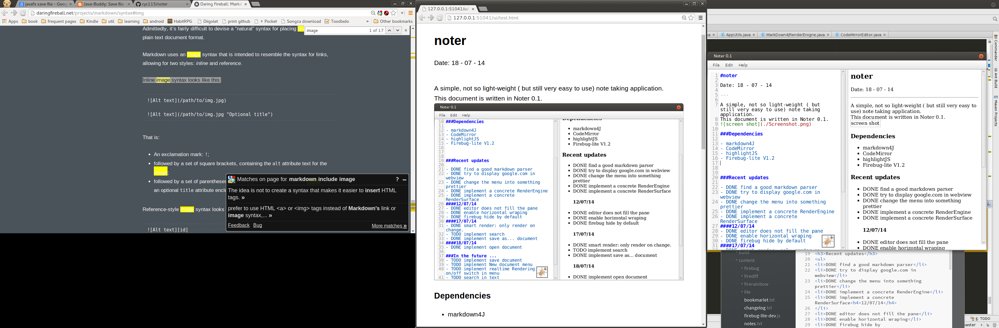

<link rel="stylesheet" href="./src/ui/mdimport.css">
<link rel ="stylesheet" href="./src/ui/gfm.css">
<link rel = "stylesheet" href="./src/ui/highlightjs/styles/github.css">
<script src="./src/ui/highlightjs/highlight.pack.js"> </script>
<article>
<h1>noter</h1>
<p>Date: 18 - 07 - 14</p>
<hr />
<p>A simple, not so light-weight ( but still very easy to use) note taking application.
<br  />This document is written in Noter 0.1.
<br  /></p>
<h3>Dependencies</h3>
<ul>
<li>markdown4J</li>
<li>CodeMirror</li>
<li>highlightJS</li>
<li>Firebug-lite V1.2</li>
</ul>
<pre><code class="java">//this is java code//
FileChooser fileChooser = new FileChooser();
fileChooser.setTitle("Open Resource File");
fileChooser.showOpenDialog(stage);
</code></pre>
<p>For the most part the markdown Parsing Engine is very good. however there is one little problem with two consecutive code blocks&hellip;</p>
<pre><code class="javascript">//just starting to learn js!
var f = function (){
    console.log("helloworld");
}
</code></pre>
<h3>Recent updates</h3>
<ul>
<li>DONE find a good markdown parser</li>
<li>DONE try to display google.com in webview</li>
<li>DONE change the menu into something prettier</li>
<li>DONE implement a concrete RenderEngine</li>
<li>DONE implement a concrete RenderSurface<h4>12/07/14</h4>
</li>
<li>DONE editor does not fill the pane</li>
<li>DONE enable horizontal wraping</li>
<li>DONE firebug hide by default<h4>17/07/14</h4>
</li>
<li>DONE smart render: only render on change.</li>
<li>TODO implement search</li>
<li>DONE implement save as&hellip; document<h4>18/07/14</h4>
</li>
<li>DONE implement open document</li>
</ul>
<h3>In the future &hellip;</h3>
<ul>
<li>TODO implement save document</li>
<li>TODO implement New document menu</li>
<li>TODO implement realtime Rendering on/off switch in menu</li>
<li>TODO search in text</li>
<li>TODO block select</li>
</ul>

</article>
<script>hljs.initHighlightingOnLoad();</script>
